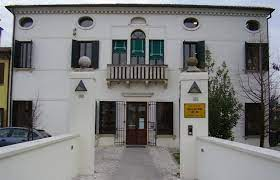
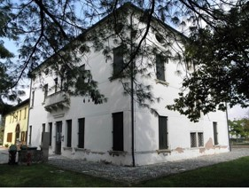
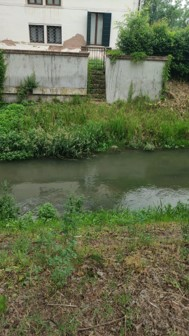

Edificata dalla nobile famiglia veneziana dei Bernardo tra la fine del XV e l’inizio del XVI secolo su un’ansa del Muson vecchio, appartenne successivamente ai Milani, ai Civran, ai Balbi Valier, ai Castelli ed ai Querini. Attualmente è proprietà del Comune di Camposampiero che l’ha riportata all’antico splendore con un accurato restauro. È sede della Federazione dei Comuni del Camposampierese e dello IAT, l’ufficio turistico territoriale. Alla villa si accede attraverso un ponte in asse con il portale d’ingresso. La facciata principale è quella ovest che presenta al piano terra un portale architravato e finestre incorniciate in modo semplice. Al primo piano si notano quattro finestre come quelle sottostanti e un balconcino poggiato su mensole che delimita una serliana (apertura centrale ad arco e due laterali architravate). Il sottotetto è invece illuminato da quattro oculi ellittici, e un semi-oculo tamponato sopra l’apertura ad arco che perfeziona la simmetria evitando di spezzarla. Nella facciata est, originariamente la principale, si nota al piano terra un portale architravato con lunetta tamponata affiancato da finestre dello stesso stile della facciata ovest. Al piano nobile la luce è assicurata da una trifora, mentre il sottotetto e illuminato da quattro oculi ovali. Una cornice dentellata impreziosisce il sottogronda sui quattro fronti. All’interno, il piano terra si compone di un salone centrale, adibito originariamente a soggiorno-zona pranzo, e di quattro saloni laterali che fungevano da cucina, ripostiglio e sale di servizio. Lo schema si ripete, simmetricamente, al piano superiore che fungeva da zona notte. Sono meritevoli di attenzione il camino, i solai con travature a vista decorate a mano, i pavimenti - originali in pietra al piano terra, in terrazzo veneziano al piano superiore - alcuni affreschi databili tra la fine dell’Ottocento e il primo Novecento. Di recente è riemerso l’intonaco dell’approdo fluviale della villa.
This was built by the Venetian Bernardo noble family between the end of the 15th and the beginning of the 16th century on a bend in the Muson Vecchio river. It is currently owned by the Municipality of Camposampiero, which has carefully restored it to its former glory. It now houses the Federation of Municipalities of the Camposampierese area and the IAT (local tourist information office). The villa is accessed through a bridge aligned with the main entrance portal. The main façade is on the west, featuring an architraved portal on the ground floor and windows with simple frames. On the first floor, there are four windows mirroring the ones below, and a small balcony resting on corbels that defines a Serliana (a central arched opening flanked by two architraved side ones). The attic is lit by four elliptical oculi, and a blocked semi-oculus above the arched opening perfects the symmetry without breaking it. On the east façade, which was originally the main one, the ground floor features an architraved portal with a blocked lunette, flanked by windows in the same style as the west façade. On the piano nobile (main floor), light is provided by a triple-lancet window (trifora), while the attic is illuminated by four oval oculi. A dentil cornice embellishes the eaves on all four sides. Inside, the ground floor consists of a central hall, originally used as a living/dining area, and four side rooms that served as a kitchen, storage, and service rooms. This symmetrical layout is repeated on the upper floor, which functioned as the sleeping quarters. The fireplace, the exposed wooden ceilings hand-decorated, the floors—original stone on the ground floor, Venetian terrazzo upstairs—and some frescoes dating from the late 19th and early 20th centuries are particularly noteworthy. The plaster of the villa’s river landing has recently been resurfaced.


